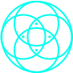

Истинный DEX интернет
Связь между устройствами Dex Node обеспечивается двумя независимым каналам для передачи ключей шифрования и другой информации требующей повышенной безопасности
01
Собственный высокочастотный наземный канал
Автономный канал связи на частоте 433 Мгц, благодаря которому устройства Dex Node обнаруживают друг друга в радиусе до 10 км. и формируют устойчивый и безопасный канал связи, перекрывая друг друга наземным радиосигналом, объединяясь друг с другом по принципу пчелиных сот
02
Низкоорбитальный спутниковый канал
Второй канал связи обеспечивается прямым подключением устройств Dex Node к спутниковой системе Swarm от компании SpaceX. Dex Node через компактную антенну (25 см.) подключается к ближайшему низкоорбитальному спутнику Swarm для двустороннего обмена данными. Спутники SpaceX Swarm образуют устойчивую связь c Dex Node покрывая планету на 100%
Второй канал связи обеспечивается прямым подключением устройств Dex Node к спутниковой системе Swarm от компании SpaceX. Dex Node через компактную антенну (25 см.) подключается к ближайшему низкоорбитальному спутнику Swarm для двустороннего обмена данными. Спутники SpaceX Swarm образуют устойчивую связь c Dex Node покрывая планету на 100%
Dexnet VS публичный интернет
Публичный интернет
Публичный интернет существует благодаря объединению дата-центров и провайдеров, которые представляют собой централизованную платформу и имеют как физическую, так и юридическую уязвимость. Несмотря на то, что современный мир тотально стремится к децентрализации, такие технологии как Блокчейн, Торрент, DEX-биржи и другие производные продукты, продолжая использовать только публичный интернет остаются в централизованной среде. Что, к сожалению, на базовом уровне лишает такие разработки их изначального смысла - децентрализации
DEX Cloud
Работает по принципу децентрализации дата-центров и передачи их в собственность пользователям — участникам децентрализованной сети. Каждая нода — это мини датацентр с двумя непересекающимися с публичным интернетом каналами связи
Весь мир в маленьком устройстве
DEX Node
Физическое устройство c высокопроизводительным процессором, объемной SSD памятью, уникальным NFT аутентификатором и собственными независимыми беспроводными каналами связи
1499 USDT
- СPU: 8 ядерный Amlogic S912 Cortex
- Info: Full Color IPS LCD
- Ethernet: RJ45, Wi-Fi
- Satellite system: SWARM by SpaceX
- Dex Wan: Собственный высокочастотный наземный канал 433Мгц, 2Вт.
Этапы покрытия планеты
01
Перманентная активация устройств
с использованием публичного интернета. Передача ключей и другой конфиденциальной информации между устройствами происходит по низкоорбитальному спутниковому каналу Swarm
02
Формирование локальных кластеров
Устройства объединяются друг с другом внутри кластера по собственному наземному высокочастотному каналу. Связь между кластерами происходит по средствам спутниковой связи Swarm
03
Формирование континентальных кластеров
Локальные кластеры объединяются друг с другом внутри континента по собственному наземному высокочастотному каналу. Связь между континентами для обмена ключами шифрования происходит по средствам спутниковой связи Swarm
Первые услуги,доступные в Dexnet
DEX Mobile
Первый в мире децентрализованный международный мобильный оператор.
DEX Mobile использует существующую сеть GSM станций мобильной связи для обмена зашифрованным пакетом данных, ключ к которому передается абоненту по сети низкоорбитальных спутников Swarm SpaceX или по прямому собственному каналу DEX Wan.
Для этого абонентам необходимо как минимум один раз подключить свое мобильное устройство с установленной eSim Dex Mobile к сети Dex Net.
В этот момент мобильное устройство обменяется ключами дешифрации с абонентом через сеть Dex Net, минуя вышки операторов и публичный интернет
DEX Cloud
Технология облачного хранения данных в децентрализованной сети устройств DEX Node.
Все так же просто, как разместить файл в любом известном облаке. Разница только в том, что ваш файл не хранится на сервере в дата-центре, а шифруется в контейнер, разбивается на фрагменты, каждый фрагмент копируется и размещается на устройствах DEX Node.
При этом система автоматически отслеживает онлайн доступ к каждой копии фрагмента контейнера и в случае утраты связи с одной из копий тут же копирует ее одновременным скачиванием со всех доступных устройств с существующим фрагментом по принципу Torrent и размещает на другое, свободное устройство. Таким образом обеспечивая круглосуточный доступ к фрагментам контейнера для мгновенной сборки и дешифрации в случае, когда вы хотите скачать свой файл из облака обратно.
Дорожная карта
1-й квартал 2023
Пресейл DEX Node
Закрытый пресейл устройств для разворачивания децентрализованной мировой сети
2-й квартал 2023
Активация DEX Net
Активация устройств DEX Node и развертывание децентрализованной сети DEX Net
3-й квартал 2023
Запуск DEX Mobile
Старт продаж sim-карт первого децентрализованного международного мобильного оператора
4-й квартал 2023
Открытие DEX Cloud
Децентрализованное дисковое хранилище для частного и коммерческого использования